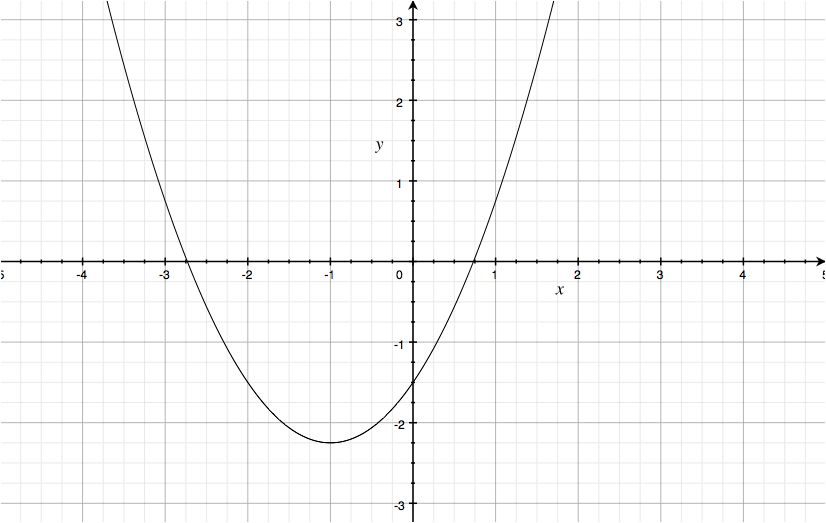

Trajectory formation
The problem of trajectory formation seeks a geometric path that is a function of time. In robotics, this problem encompasses many problems, as examples:
- Point to point motion for a joint: Given a desired movement time \(\Delta t = t_f - t_0\) and current \(\theta_0\) and desired configuration \(\theta_f\) of a joint in a robot, find a function \(\tau : \mathbb{R} \to \mathbb{R}\) such that (1) \(\tau(t_0) = \theta_0, \tau(t_f) = \theta_f\); (2) \(\dot{\tau}\) and \(\ddot{\tau}\) exist; and (3) \(\dot{\tau}(t) = \ddot{\tau}(t) = 0\) for \(t \ge t_f\).
- Point to point motion for a joint with one or more intermediate points: Given current \(\theta_0\) and desired intermediate and final configurations \(\theta_{i_1}, \ldots, \theta_{i_n}\), and \(\theta_f\), respectively- with corresponding desired arrival times \(t_{i_1}, \ldots, t_{t_n}\) and \(t_f\)- of a joint in a robot, find a function \(\tau : \mathbb{R} \to \mathbb{R}\) such that (1) \(\tau(t_0) = \theta_0, \tau(t_{i_j}) = \theta(t_{i_j}) (\textrm{ for } j=1,\ldots,n), \tau(t_f) = \theta_f\); (2) \(\dot{\tau}\) and \(\ddot{\tau}\) exist; and (3) \(\dot{\tau}(t) = \ddot{\tau}(t) = 0\) for \(t \ge t_f\).
- Point to point motion for a point on the robot (like an end-effector): Given a desired movement time \(\Delta t = t_f - t_0\) and current \(\mathbf{x}_0\) and desired configuration \(\mathbf{x}_f\) of a specified point on a robot link, find a function \(\tau : \mathbb{R} \to \mathbb{R}\) such that (1) \(\tau(t_0) = \mathbf{x}_0, \tau(t_f) = \mathbf{x}_f\); (2) \(\dot{\tau}\) and \(\ddot{\tau}\) exist; and (3) \(\dot{\tau}(t) = \ddot{\tau}(t) = 0\) for \(t \ge t_f\). This problem requires inverse kinematics.
The trajectory formation problem is specified as follows:
Given a desired movement time \(\Delta t = t_f - t_0\) and current \(\theta_0\) and desired configuration \(\theta_f\) of a joint in a robot, find a function \(\tau : \mathbb{R} \to \mathbb{R}\) such that (1) \(\tau(t_0) = \theta_0, \tau(t_f) = \theta_f\); (2) \(\dot{\tau}\) and \(\ddot{\tau}\) exist; and (3) \(\dot{\tau}(t) = \ddot{\tau}(t) = 0\) for \(t \ge t_f\)
Testing your understanding:
Identify the types of trajectories in the videos below. First segment the trajectories into point-to-point motions (where velocities are zero). Now try to answer the following questions: (1) Is the trajectory planned in joint space or in operational space? (2) Does the motion include any intermediate points (or does it just move between a starting and an ending point?)
- QRIO humanoid- consider upper body motion only
- Industrial robot
Polynomials and spline-based trajectories
The straightest path between two points (in Euclidean space) is a line segment. Robots generally do not use linear trajectories, though, because the velocity will be constant over the execution, meaning that there is no time to “ramp up” to the desired velocity at the end of the movement (if necessary) and “ramp down” to zero velocity (again, if necessary). Those discontinuities are more liable to result in damage to the robot’s motors.
A straightforward way to address this problem is to use a trapezoidal velocity profile, as depicted below, which gives the robot time to reach the peak velocity, which may even be the maximum velocity of the actuator.

The picture also plots the acceleration profile, which is clearly not smooth, and robots operate more accurately and exhibit less wear under smooth commands. Rather than trying to pose paths and velocity profiles, we can start by stating the constraints- position and velocity- that should be satisfied at each endpoint:
\begin{align}
\tau(t_0) & = \theta_0 \
\tau(t_f) & = \theta_f \
\dot{\tau(t_0)} & = \dot{\theta_0} \
\dot{\tau(t_f)} & = \dot{\theta_f} \
\end{align}
This case only considers the path that a single joint follows over time. For the \(n\) joints of a robot, \(4n\) constraints would be necessary. Question: are the constraints for each joint independent of the constraints of each other joint? In other words, do I have to solve \(4n\) equations simultaneously or 4 simultaneous equations \(n\) times (and which is faster?)
Cubic polynomials
A line segment is just a polynomial of degree one, and a cubic polynomial is defined by four constants: \begin{equation} \tau(t) \equiv a_3t^3 + a_2t^2 + a_1t + a_0 \end{equation}
which means that we can evaluate the cubic polynomial at \(t_0)\) and \(t_f)\) and solve for these constants. Not only that, but the cubic polynomial is a linear function of its constants, indicating that we can obtain a guaranteed solution to the value of the constants using linear algebra (assuming that the four equations are independent, which they are).

A nice property of cubic polynomials is that they have a smooth bell-shaped velocity profile as seen in the equation below and the plot following:
\begin{equation} \dot{\tau}(t) = 3a_3t^2 + 2a_2t + a_t \end{equation}

In other words, the cubic polynomial satisfies our smoothness requirement and satisfies all of our endpoint constraints as well.
Evaluating the cubic polynomial and its derivative at \(t_0\) and \(t_f\), we now formulate the system of linear equations, solving for the a parameters:
\begin{align}
a_3t_0^3 + a_2t_0^2 + a_1t_0 + a_0 & = \theta_0 \
a_3t_f^3 + a_2t_f^2 + a_1t_f + a_0 & = \theta_f \
3a_3t_0^2 + 2a_2t_0 + a_1 & = \dot{\theta_0} \
3a_3t_2^2 + 2a_2t_f + a_1 & = \dot{\theta_f}
\end{align}
or in matrix form, showing the \(a_i\) variables to solve for:
\begin{equation}
\begin{bmatrix}
t_0^3 & t_0^2 & t_0 & 1 \
t_f^3 & t_f^2 & t_f & 1 \
3t_0^2 & 2t_0 & 1 & 0 \
3t_f^2 & 2t_f & 1 & 0
\end{bmatrix}
\begin{bmatrix}
a_3 \
a_2 \
a_1 \
a_0
\end{bmatrix} =
\begin{bmatrix}
\theta_0 \
\theta_f \
\dot{\theta}_0 \
\dot{\theta}_f
\end{bmatrix}
\end{equation}
This (\(4 \times 4\) system is small enough to be solved analytically; the closed form solution is provided in S&S, among other references. From the closed form solution presented in S&S, it is clear that the system is always solvable unless \(t_0 = t_f\). One downside to cubic polynomials is that the acceleration is not zero at endpoints, meaning that the higher derivatives of the trajectory are not smooth. Remember: smoother motions tend to increase a robot’s longevity.
Quintic polynomials
A straightforward way to introduce acceleration constraints is to use a higher order polynomial. A quintic polynomial:
\begin{equation} \tau(t) \equiv a_5t^5 + a_4t^4 + a_3t^3 + a_2t^2 + a_1t + a_0 \end{equation}
will permit constraining acceleration at the beginning and end of the movement. Again, setting this up as a system of linear equations, and solving for a params:
\begin{align}
a_5t_0^5 + a_4t_0^4 + a_3t_0^3 + a_2t^2 + a_1t + a_0 & = \theta_0 \
a_5t_f^5 + a_4t_f^4 + a_3t_f^3 + a_2t^2 + a_1t + a_0 & = \theta_f \
5a_5t_0^4 + 4a_4t_0^3 + 3a_3t_0^2 + 2a_2t_0 + a_1 & = \dot{\theta_0} \
5a_5t_0^4 + 4a_4t_f^3 + 3a_3t_2^2 + 2a_2t_f + a_1 & = \dot{\theta_f} \
20a_5t_0^3 + 12a_4t_0^2 + 6a_3t_0 + 2a_2 = \ddot{\theta_0} \
20a_5t_0^3 + 12a_4t_f^2 + 6a_3t_2 + 2a_2 = \ddot{\theta_f}
\end{align}
or in matrix form, showing the \(a_i\) variables to solve for:
\begin{equation}
\begin{bmatrix}
t_0^5 & t_0^4 & t_0^3 & t_0^2 & t_0 & 1 \
t_f^5 & t_f^4 & t_f^3 & t_f^2 & t_f & 1 \
5t_0^4 & 4t_0^3 & 3t_0^2 & 2t_0 & 1 & 0 \
5t_f^4 & 4t_f^3 & 3t_f^2 & 2t_f & 1 & 0 \
20t_0^3 & 12t_0^2 & 6t_0 & 2 & 0 & 0 \
20t_f^3 & 12t_f^2 & 6t_f & 2 & 0 & 0
\end{bmatrix}
\begin{bmatrix}
a_5 \
a_4 \
a_3 \
a_2 \
a_1 \
a_0
\end{bmatrix} =
\begin{bmatrix}
\theta_0 \
\theta_f \
\dot{\theta}_0 \
\dot{\theta}_f \
\ddot{\theta}_0 \
\ddot{\theta}_f
\end{bmatrix}
\end{equation}
This (\(6 \times 6\) system is small enough to be solved analytically given sufficient computational time; again, the closed form solution is provided in S&S, among other references. Again, the system is always solvable unless \(t_0 = t_f\).
Intermediate points
It is common to want to plan a robot’s path through a sequence of points. For example, if I need to execute the pick-and-place task depicted in this video:
then I need one or more intermediate points. The naive way to approach this is to attempt to increase the degree of the polynomial to accommodate as many constraints as necessary to account for intermediate points. However, the presence of Runge’s phenomenon means that such higher degree polynomials are likely to exhibit strange paths. Instead of higher order polynomials, we use the cubic or quintic polynomials already discussed and add one or more constraints to “join” the polynomials together. These joined polynomials are known as a [spline] (https://en.wikipedia.org/wiki/Spline_(mathematics)).
Before reading further: if you want to form a cubic spline that starts from one point, passes through another point, and ends at another with velocity constraints at the first and last points, how many constraint equations are there? Try to form the constraint equations. How many variables are there? Can you add constraint equations as necessary so that the number of constraint equations matches the number of unknowns?
One intermediate point with cubic splines
The equation for the cubic spline follows: \begin{align} \tau(t) \equiv \begin{cases} a_3^1t^3 + a_2^1t^2 + a_1^1t + a_0^1 & \textrm{ if } t \leq t_i, \\ a_3^2t^3 + a_2^2t^2 + a_1^2t + a_0^2 & \textrm{ if } t \gt t_i. \end{cases} \end{align}
This means that we have eight variables to determine.
Solving for the trajectory to pass through an intermediate point at a particular instant in time adds at least one constraint equation (specifying a velocity at the intermediate point adds another, specifying an acceleration at the intermediate point adds a third).
The constraints that we have are:
- 2 constraints (position and velocity) at \(t_0\) and \(t_f\)
- 2 position constraints at the intermediate point: this ensures that the two splines match
This leaves us with eight variables and six constraints. In other words, we must introduce some new constraints to make the system of linear equations solvable. Note: we could solve a least squares problem instead, though we would not have any control over the kind of solution that would result.
Some options then are:
- Set zero velocity at the intermediate point. This would give two additional equations.
- Make velocities and acccelerations equal at the intermediate point. This would also give two additional equations.
TODO: ensure that student knows how to evaluate the spline / feed the value into the controller
Multiple intermediate points with cubic splines
For a cubic spline with one via point, a \(8 \times 8\) linear system results. For a cubic spline with two via points, a \(4(n+1) \times 4(n+1)\) system results. From my learning module on linear algebra you will recall that the asymptotic running time for solving a linear system is \(O(n^3)\). Fortunately, the cubic spline problem with \(n\) intermediate points exhibits only \(O(n)\) complexity, however; the terms in the system of linear equations can be rearranged so that the matrix is banded.
Intermediate points with quintic splines
Quintic splines with intermediate points work in exactly the same manner as cubic splines. The number of constraints and variables (and of course the size of the system) changes but everything else remains identical.
Operational space
For manipulation tasks, the robot must physically interact with objects in its workspace. This meanst that inverse kinematics generally must be inserted at some point in the planning or control processes. Two options are to (1) convert from joint space to work space before planning and then plan in joint space or (2) plan trajectories in the workspace and then convert to joint space on the fly. These processes are depicted below.


Which approach is better? The transformation from joint space to operational space is usually highly nonlinear, meaning that planning in joint space might result in undesirable paths for the robot’s links in operational space. The robot’s control strategy may also be amenable to commands in operational space; for example, a walking robot might want to keep its foot stiff in pitch and roll dimensions, but allow movement in vertical, horizontal, and yaw directions (to accommodate sensing error).
On the other hand, Craig points out three problems with planning in the workspace: (1) intermediate points can be unreachable (this problem could be addressed using motion planning), (2) high joint velocities may be produced if the robot is near a singularity, and (3) the start and goal configurations may be reachable in vastly different IK solutions (motion planning could address this problem also).
These scenarios are depicted in the figures below.
Planning rotational paths
If planning is performed in operational space and includes rotational motion, then particular problems must be considered. If the operational space is SE(2), then the robot might be asked to go from angle \(\theta(t_0) \equiv \frac{\pi}{8}\) to \(\theta(t_f) \equiv \frac{15\pi}{8}\). Barring joint limit constraints, the shortest path is through zero. For planning, this is achieved by setting \(\theta(t_f) \equiv -\frac{\pi}{8}\).
Planning 3D rotational movements for a robot link is more involved. Our options are:
- Form a separate trajectory for all nine values of the 3D orientation matrix. Not only are six trajectories more than necessary, the combined output of the nine trajectories at a given point in time is unlikely to be an orthogonal matrix (meaning that it will not represent a rotation matrix).
- Interpolate over roll-pitch-yaw or one of the other 23 Euler angle representations.
- (and so on, interpolating over one of the many 3D representations for orientation)
Visualizations of rotational interpolation using various representations can be seen here.
Unit quaternions has one advantage over the other representations: linear interpolatants between two orientations lies on the great circle between the two endpoints. This means that the path between the two orientations is the straightest, shortest path between the two orientations (note: there are actually two such paths on the “great circle”, but it is easy to find the shorter one). Two options are linear interpolation between the quaternion values and spherical linear interpolation (“slerp”).

Using dynamical systems to form trajectories
Polynomial / spline-based trajectory formation works well for industrial robots where the environment is controlled and the execution speed can be timed to ensure that deviation from the trajectory will be small. For autonomous robots, two problems can arise as the robot deviates from the planned trajectory.
First, as the deviation becomes large, the plan becomes less viable. The mismatch between the controller and the plan’s d
The second problem will occur as the robot determines that it needs to replan as the plan is executing. The robot’s velocity will be changing as the replanning is occuring. (replanning needs to occur w/in a single control cycle) - replanning
TODO: make sure we point out how it can be difficult to ensure that we start executing one trajectory right after another to use velocity-level constraints (re-planning) TODO: talk about very, very small timespans
Further reading
TODO: fill these in
- Trajectory optimization. Numerical methods. Dido’s Problem
- Trajectory scaling